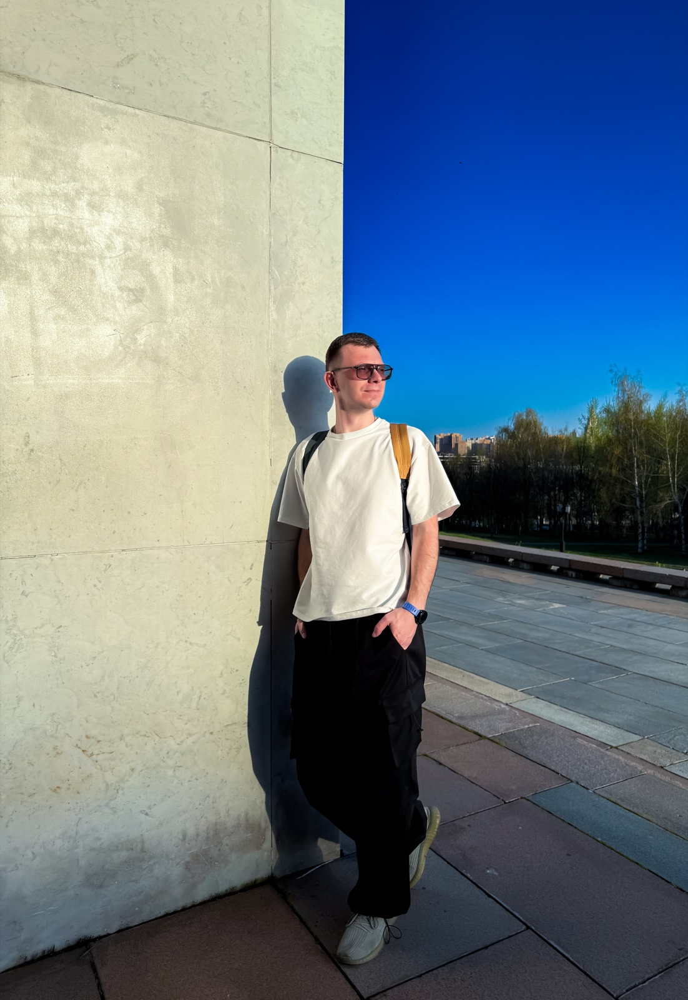
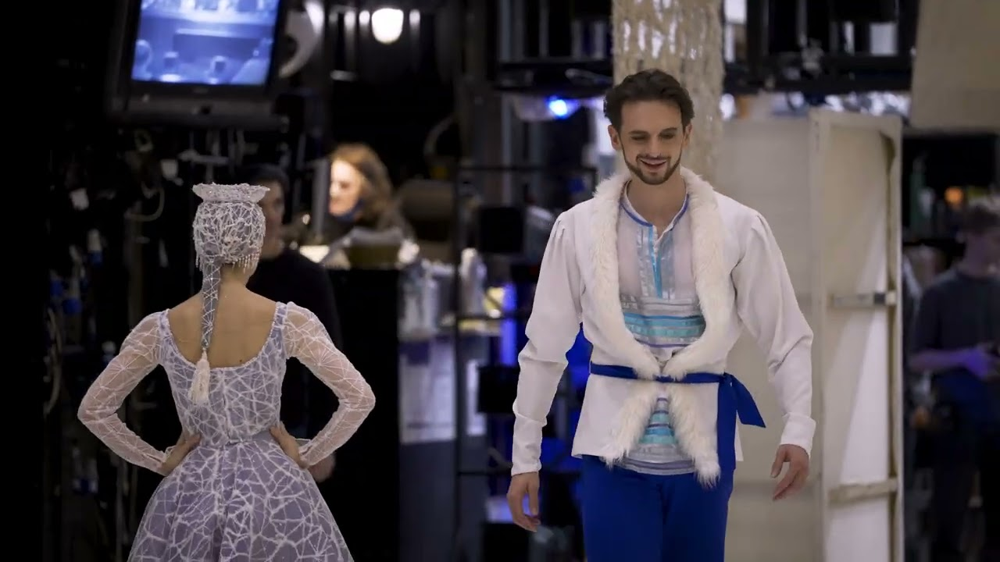
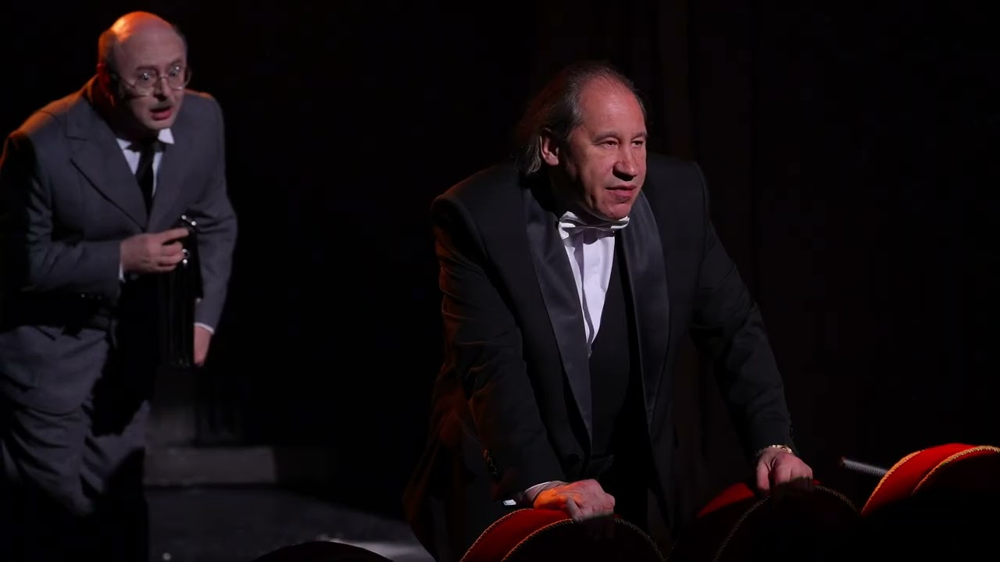

CINEMATOGRAPHER / FILM EDITOR
Alexey Biryukov

Мне важно передать атмосферу: движение города, энергию сцены, характер человека в кадре.


В каждой истории —
свой ритм.
Я Алексей Бирюков, видеооператор и режиссёр монтажа. Снимаю городские события, театр, спорт и истории о людях.
В моём портфолио — фестивали и городские праздники, театральные трейлеры, спортивные проекты и видео о тех, кто каждый день делает свою работу.
В съёмке и монтаже уделяю внимание цвету, ритму и деталям. Мне интересно, как свет меняет настроение сцены, а движение и монтаж помогают почувствовать её изнутри.
LET’S MAKE SOMETHING